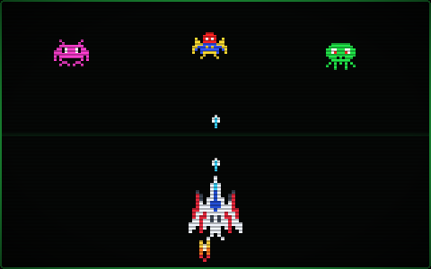
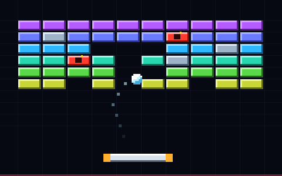
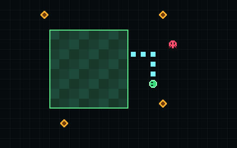
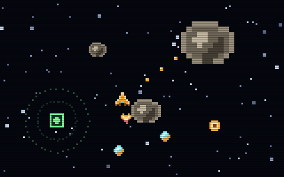
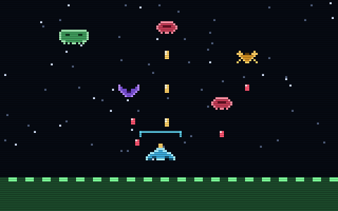
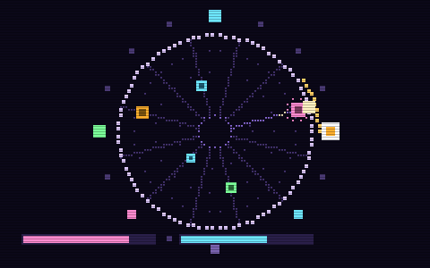
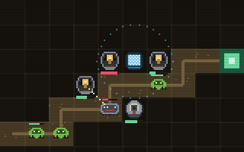
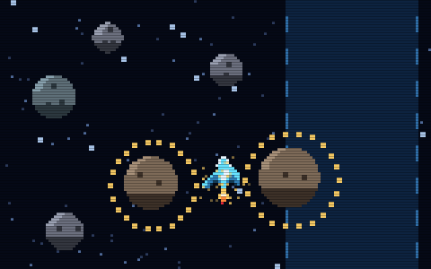
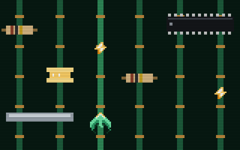

Arcade Library
Arcade games with no engine underneath them.
Nine browser games whose entire simulation — physics, enemy AI, bullet pools, collisions, territory capture, fuel and cargo, a procedurally generated board — is hand-written WebAssembly Text. No game framework, no compiler front-end, no runtime dependency. JavaScript forwards input and draws what it reads back out of linear memory, and that is all it does.
Play
Nine games

Pixel Wave
A retro wave shooter. The swarm patrols the upper half of the arena, asteroids fall, and every cleared level adds one more enemy.

Grid Breaker
Brick-breaking where the brick layout, the ball physics and the power-up drops all live in the engine. The paddle follows the pointer, or a stick on touch.

Worm Chase
Leave your territory, loop back, and everything the loop sealed off becomes yours. A flood fill decides what counts as enclosed.

Asteroid Miner
Break rocks into smaller rocks, fill the hold, and fly it home before the tank runs dry. Drawn at 320x240 with scanlines, on purpose.

Sector Defense
Hold a line against attackers that each pick their own path. A shield that only recovers once the shooting stops, and a combo that decays.

Pulse
The engine is the sequencer. Enemies arrive on sixteenth notes and a shot fired on the beat hits three times as hard, so the music and the game cannot drift apart.

Tower Defense Lite
You place, and then you watch. Guns overheat and trip; a vent shoots nothing and cools the eight squares around it, and every vent is a gun you did not build.

Starfield Runner
Nothing to shoot and nothing to collect. Close passes are the only score and the only repair, and the safe line is drawn on the board so you can see what refusing it costs.

Circuit Runner
Six traces, components coming at you, and current draining the whole time. Nothing to shoot — the only verb is which trace you are on.
Learn
Learn WebAssembly
A full course in docs/ — the language from first principles, the ecosystem around it, and then the Pixel Wave, Worm Chase, Asteroid Miner, Sector Defense and Circuit Runner engines as the worked example. Twenty-two chapters, a glossary and a reading list.
- 01 · What WebAssembly actually isAnd the four things it is usually mistaken for
- 02 · Reading and writing WATS-expressions, the stack machine, folded form
- 05 · Linear memoryThe single mutable array everything lives in
- 07 · The JavaScript boundaryImports, exports, and what crossing it costs
- 12 · The security modelWhat the sandbox protects, and what it doesn't
- 16 · Case study: entity poolsHow these engines store 33 enemies and 160 bullets
- 18 · Case study: a grid and a flood fillWhat "enclosed" means, and how to answer it with no allocator
- Full contents →All 22 chapters, plus the reference material
Build
Build from source
git clone https://github.com/GautamGoklani/arcade-library cd arcade-library npm install # wabt, the WebAssembly Binary Toolkit npm run build # every game.wat → game.wasm npm run serve # http://localhost:8080
The compiled .wasm files are committed, so a fresh checkout is playable without
installing anything. npm run check verifies they still match their sources.